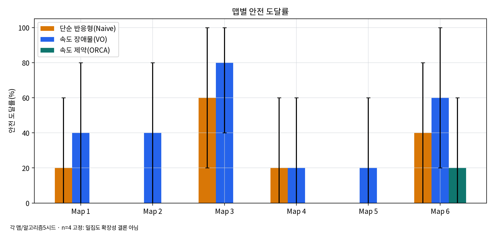

Newton 물류창고 충돌 회피 시뮬레이터
팀원 공유용 프로젝트 현황 및 실험 결과
작성 기준일: 2026년 11월 17일
기준 배치: 20261117T133155_2c92afba
사람과 자율주행 로봇이 함께 이동하는 물류창고에서 Naive·VO·ORCA를 같은 조건으로 비교하면 목적지 도달률, 안전성, 이동 효율과 계산 비용은 어떻게 달라지는가?
현재는 실제 물리 시뮬레이션, 세 알고리즘 비교 실행, 결과 저장, 통계 분석, 그래프 생성과 웹 결과 조회까지 연결되어 있습니다. 이 문서의 대표 결과는 6개 맵 × 3개 알고리즘 × 5개 시드 = 90조건입니다. 과거 240회와 Pygame 예비 실험은 별도 자료로 보존하며 같은 분모에 합치지 않습니다.
수치는 보존된 원본 CSV를 재집계한 값입니다. 현재 90조건은 작업자 4명·Crossing에 한정되며 모든 환경에서의 알고리즘 순위를 뜻하지 않습니다.
경로 계획은 창고 바닥의 2차원 좌표에서 수행하고, 움직임·접촉·자세는 Newton과 Warp 기반 CPU 강체 시뮬레이션으로 처리합니다. Viser를 이용한 3D 보기와 2D Top View는 같은 물리 상태를 보여 줍니다.
| 항목 | 설정 / 기술 | 역할 |
|---|---|---|
| 창고 | 38 × 26m, 선반 6개 | 고정 장애물과 이동 통로 |
| 주행 로봇 | R0, 반경 0.42m | 목적지까지 이동하며 지역 회피 수행 |
| 속도·안전 여유 | 최대 1.2m/s · 몸체 사이 0.35m | 세 알고리즘 공통 |
| 물리 시간 | 1/30초, 최대 5,400프레임 | 최신 배치의 한도는 물리 시간 180초 |
| 물리·화면 | Newton 1.7.0 · Warp 1.19.0 · Viser 1.1.1 | 강체 계산과 브라우저 3D 관찰 |
| 분석·검증 | NumPy · Pandas · SciPy · Matplotlib pytest · Node.js · Playwright | 집계·통계·그림·자동/브라우저 검사 |
현재 기본 조건인 Crossing에서는 worker-0~3 모두 로봇의 전역 경로를 가로질러 이동합니다. 시드로 위치·속도·출발 지연을 정하고, 순찰 목표에 도착하면 반대편으로 되돌아갑니다. 모든 작업자에 실제 강체 접촉 판정이 적용되며 충돌을 강제하지는 않습니다.
전역 탐색은 A*·Dijkstra·RRT를 지원합니다. 최신 비교에서는 A*로 고정해 지역 회피의 차이를 비교했습니다. 현재 주행 중 온라인 재탐색 횟수는 0이며, 초기 경로와 지역 회피를 기준으로 평가합니다.
실제 로봇 하드웨어의 모든 구동·센서 특성을 재현한 디지털 트윈으로 검증한 상태는 아닙니다. 안전거리 지표에는 평면 원형 몸체 근사가 포함됩니다.
| 맵 | 배치 특징 |
|---|---|
| Map 1 · Standard | 위·아래에 선반 3개씩, 중앙 직선 통로 |
| Map 2 · Horizontal | 가로 선반을 엇갈리게 배치하여 선반 끝 우회 유도 |
| Map 3 · Zigzag | 선반 사이 틈을 번갈아 배치하여 방향 전환 유도 |
| Map 4 · Maze | 혼합 방향 선반, 막다른 길과 외곽 우회 경로 |
| Map 5 · Dense | 중앙 밀집 선반과 좁은 가로·세로 통로 |
| Map 6 · Fishbone | 대각선 선반과 V자 우회 통로를 가진 자체 설계 배치 |
선반의 시각적 위치뿐 아니라 실제 충돌체와 경로 탐색 장애물도 같은 배치를 사용합니다. 맵 변경 시 기존 실행과 경로를 초기화하고 새 배치에서 다시 준비합니다.
| 알고리즘 | 실제 판단 방식 | 현재 구현의 비용 |
|---|---|---|
| Naive | 현재 거리로 감속하고 가까운 에이전트 반대 방향의 반발 속도를 더함. 미래 위치 예측 없음 | O(n) |
| VO | 상대 위치·속도로 미래 충돌을 예측하고 안전한 후보 속도 중 목표에 가까운 속도를 선택 | O(Kn) K = 74 |
| ORCA | 에이전트별 속도 반평면 제약을 만들고 순차 2차원 선형계획으로 속도 선택 | 제약 생성 O(n) 현재 순차 구현 최악 O(n²) |
n은 R0을 제외한 주변 이동 에이전트 수입니다. VO의 기본 예측 시간은 3초입니다. K가 고정이면 입력 크기에 대한 점근적 차수는 선형이지만 검사 횟수와 상수 비용이 Naive보다 큽니다.
ORCA는 프로젝트 내부 구현이며 외부 RVO2를 연결한 방식은 아닙니다. 현재 작업자·추가 AMR은 정해진 경로를 순찰하며 상호 회피하지 않아 R0가 회피 책임을 전부 부담합니다. 복잡도와 결과는 현재 구현·조건에 관한 설명이며 모든 ORCA 구현에 일반화하지 않습니다.
현재 동적 이웃 검사에는 공간 인덱스를 사용하지 않습니다. CPU 부하, 조기 탈락, 실제 투영 횟수와 Python/NumPy 호출 비용 때문에 Runtime 곡선은 Big-O와 다르게 나타날 수 있습니다.
이전에 실시간 실행과 연구 자료 사이에 있던 설정 차이를 정리하고, 실효 조건을 통일한 배치를 다시 수행했습니다.
| 조건 | 설정 |
|---|---|
| 실험 수 | 6개 맵 × Naive/VO/ORCA × 시드 42~46 = 90조건 |
| 인구·만남 | 작업자 4명 · Crossing · 동적 왕복 순찰 |
| 탐색·주행 | A* · 최대 1.2m/s · 안전 여유 0.35m · 5,400프레임 |
| 공정성 | 같은 맵·시드의 세 알고리즘 초기 상태 해시 일치, 30개 대응 조건 |
| 실행·조회 | 순차 CPU 실험. 비교·결과·연구 분석은 같은 90개 실행 ID 사용 |
초기 상태와 이동 규칙은 같게 맞췄습니다. 이후 실제 충돌 등 물리 상호작용에 따라 미래 상태가 달라지는 것은 각 주행 결과에 포함됩니다.
| 알고리즘 | 목적지 도달 | 무충돌 도달 | 안전 도달 |
|---|---|---|---|
| Naive | 23/30 · 76.67% | 16/30 · 53.33% | 7/30 · 23.33% |
| VO | 27/30 · 90.00% | 23/30 · 76.67% | 13/30 · 43.33% |
| ORCA | 26/30 · 86.67% | 21/30 · 70.00% | 1/30 · 3.33% |
| 전체 | 76/90 · 84.44% | 60/90 · 66.67% | 21/90 · 23.33% |
| 알고리즘 | 평균 거리 | 평균 도착 시간 | 회피 계산시간 ms/스텝 | 전체 접촉 이벤트 |
|---|---|---|---|---|
| Naive | 35.606m | 41.545초 | 0.02626 | 14회 |
| VO | 33.585m | 42.059초 | 1.53575 | 15회 |
| ORCA | 34.916m | 41.586초 | 0.07886 | 17회 |
이동 거리·계산 비용은 실패도 포함합니다. 도착 시간은 성공 실행만 평균 냈으며 분모는 각각 23·27·26입니다. 타임아웃을 도착 시간으로 대체하지 않습니다. 접촉은 현재 코드의 이벤트 집계이며 한 실행에서 여러 번 발생할 수 있습니다.
도달은 목표 0.25m 이내이고 실제 속도가 0.02m/s 이하인 상태입니다. 무충돌 도달은 여기에 바닥을 제외한 접촉이 없어야 합니다. 안전 도달은 무충돌 도달과 정적·동적 안전 여유 조건을 모두 만족해야 합니다.
이번 조건에서는 VO의 도달·무충돌·안전 도달이 가장 많았고 평균 이동 거리도 짧았습니다. 대신 회피 계산 비용이 가장 컸습니다. Naive는 계산 비용이 작았지만 도달률과 안전 도달률이 낮았습니다. ORCA는 Naive보다 도달 횟수가 많았지만 안전 도달은 적었습니다.
각 알고리즘의 성공 조건 집합이 다르므로 성공한 경우의 평균 도착 시간만으로 속도 순위를 정하기 어렵습니다. 회피 계산시간도 A*·물리·렌더링·네트워크 시간을 제외한 값이므로 화면 렉과 구분해야 합니다.
| 맵별 도달 | Naive | VO | ORCA |
|---|---|---|---|
| Map 1 | 4/5 | 5/5 | 5/5 |
| Map 2 | 2/5 | 2/5 | 2/5 |
| Map 3 | 5/5 | 5/5 | 5/5 |
| Map 4 | 4/5 | 5/5 | 5/5 |
| Map 5 | 3/5 | 5/5 | 4/5 |
| Map 6 | 5/5 | 5/5 | 5/5 |
Map 2는 세 방식 모두 도달률이 낮았습니다. Map 5에서는 전체 접촉 이벤트 46회 중 31회가 발생했습니다. Map 3의 ORCA는 5/5 도달하고 접촉도 없었지만 안전 도달은 0/5였습니다. 접촉 없이 도착해도 안전 여유를 지키지 못할 수 있습니다.

저장된 실제 결과를 모아 차이가 어느 조건에서 발생했고 얼마나 일관적인지 살펴봅니다. 최신 배치의 그래프 19개와 분석 CSV는 같은 원본 실행에서 생성됩니다.
같은 시드의 여러 맵을 독립 반복으로 부풀리지 않고 5개 시드를 묶음으로 재표집하는 군집 부트스트랩을 사용합니다. 알고리즘당 30회지만 독립 시드가 30개인 것은 아닙니다. 5시드의 통계는 탐색적으로 해석합니다.
위반 시점의 위치·속도·출력 속도·실제 Newton 속도·제약 잔차 등을 분석했습니다. 최신 ORCA 위험 기록은 12,808프레임입니다.
| 분류 | 관측 근거 | 프레임 수 |
|---|---|---|
| A | 허용 속도가 있지만 출력 속도가 제약 위반 | 확인되지 않음 |
| B | 출력은 만족하나 후속 실제 속도가 제약에서 이탈 | 4,974 |
| D | 현재 제약·최대 속도 범위에서 허용해를 찾지 못함 | 3,183 |
| E | 현재 로그만으로 단일 원인 판단이 어려움 | 4,651 |
이 값은 서로 연관된 프레임 수이며 독립적인 실패 실행 건수가 아닙니다. B에는 물리 속도 추종이나 프레임 중 조건 변화가 영향을 줄 수 있습니다. 비협조적 작업자 이동도 가능한 요인이지만 단일 원인으로 확정하지 않았습니다.
장애물 점유율·통행 가능 영역·우회율·최소 통행 간격·회전 수·탐색 노드·계획 시간을 측정했습니다. 기존 0.5m 격자 A* 기준으로 Map 4 경로가 약 37.90m로 가장 길었고 Map 6은 방향 전환이 14회로 가장 많았습니다. 통행 간격은 샘플 기반 운영 지표이며 연속 공간 전체의 정확한 최소 폭이라고 단정하지 않습니다.
| 자료 | 역할과 구분 |
|---|---|
| Pygame 2D 예비 실험 | 초기 사전 타당성 검증 |
| 초기 Newton 60회·18조건 | 기본 동작·저장·비교 기능 검증 |
| 통제 조건 240회 | Map 1에서 인원과 작업자/혼합 구성을 분리한 연구 |
| 별도 보완 30회 | 과거에 없던 P95·정지·상세 동작 로그 보완 |
| 최신 90조건 | 6맵·작업자 4명·Crossing·5시드의 현재 기준 |
과거 240회는 도달 227회·무충돌 152회·안전 53회입니다. 최신 90회와 조건·분모가 달라 합산하거나 성능 상승·하락 비율로 직접 비교하지 않습니다. 인원 증가 연구도 과거 별도 자료이며 현재 90조건만으로 인원 증가·다른 만남 조건의 성능을 주장하지 않습니다.
Newton 실행 카드에서 세 알고리즘을 함께 Start·Pause·Resume·Reset할 수 있고 단일 실행도 유지했습니다. 실시간 화면은 행동 관찰용이며, 비교·결과·연구 화면은 검증된 고정 배치의 같은 90개 실행을 읽습니다.
최근 표시 동기화 작업에서 관련 자동 테스트 63개·UI 검사 4개가 통과했습니다. 6맵의 18개 3D 세션, Map 2 VO 로딩 2초 지연, 화면 1초 정체 검사도 수행했습니다. 이후 실행 카드 UI 변경에서도 실제 세 세션과 비교 90행 보존을 확인했습니다.
이는 작업별 검사 범위이며 전체 코드의 최신 전체 테스트 개수를 뜻하지 않습니다. 18개 세션의 화면 검증을 목적지 도달 실험 18회 완료로 합산하지 않습니다. 느린 GPU·네트워크에서는 벽시계상의 진행 속도가 늦어질 수 있습니다.
현재 결과는 특정 창고·작업자 수·시드 조건의 관측입니다. 후속 연구에서는 조건 확대와 원인 분리를 우선해야 합니다.
현재 조건에서는 VO의 안전 도달이 가장 많고 계산 비용도 가장 큽니다. 목적지 도달과 안전 도달은 크게 다릅니다. ORCA라는 이름만으로 우월성을 가정하지 않으며, 비협조적 순찰·실제 물리 제어·제약의 양립 가능성과 함께 결과를 해석합니다.
이 문서는 보존된 측정 자료와 현재 프로젝트 문서를 바탕으로 작성했습니다. 문서 제작 과정에서 주행 90조건을 재실험하지 않았습니다. 공개 저장소 자료와 서비스 화면은 갱신 시점이 다를 수 있으므로 배치 ID와 실행 설정을 함께 확인해야 합니다.